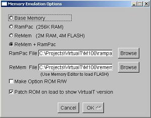
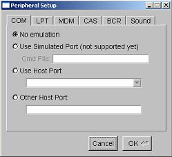
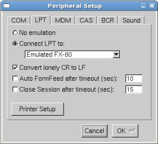
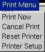
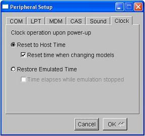

This chapter describes the emulation features supported by VirtualT. These include things such as display and speed settings, Peripherials, Option ROMs, etc.
VirtualT emulates the Model T LCD display at the hardware level, like it does all other devices. Because of this, all software written for the Model T will also work on VirtualT, even if they make direct access to the LCD hardware.
The LCD hardware implementation varies depending on the emulation model. For the T200, the LCD uses a single controller with 8K display RAM. On the other models, the LCD consists of 10 independant controllers, each responsibile for a specific region of the display. With the exception of the T200 control chip's character generator ROM, the VirtualT emulation exactly matches the hardware at a register (I/O operation) level.
Several features provided by the LCD emulation and can be accessed using the "Emulation->Display" menu items. These features are:
The Model T keyboard, while very easy to use, has a non-standard layout of special symbols and punctuation compared with modern day keyboards. The keyboard is a simple scan matrix of keys with 8 scan rows and 9 scan columns. Each model uses the same keyscan arragement, but each assigns the key mappings differently. Plus the Model T has a few extra keys that are not present on today's keyboards, such as CODE and GRPH.
Because of these differences, VirtualT must perform keyboard translation based on the emulated Model. Additionally, several keys of the standard 101-key keyboard are "mapped" to represent the extra keys present on the Model T. The mapping of these keys is as follows:
F9 - Label Key F10 - Print Key F11 - Paste Key F12 - Pause Key Left Alt - GRAPH Right Alt - CODE
There are no user controls for controlling the operation of the keyboard emulation.
Emulation speed can be controlled using the "Emulation->Speed" menu item. Emulation speed is calculated by analyzing the number of CPU cycles that have occurred over a given time interval. A high-resolution timer is used to measure time in milliseconds for accurate measurement. Even using a high-resolution timer, the speed estimates calculated are still approximate. For emulation speeds less than full speed, VirtualT slows the emulation by performing an FLTK wait operation, effectively giving control back to the OS and putting the application to "sleep". There are four options for emulation speed accessible in the "Emulation->Speed" menu:
2.4 Mhz - Forces emulation to match origial Model T speed Very CPU Friendly - Moderate emulation speed - consumes fewer Host CPU cycles CPU Friendly - Faster emulation speed - cosumes more Host CPU cycles Max Speed - Provides the fastest emulation
The Model T laptops use a system ROM to store the operating system and built-in applications. In addition to the built in Operating System ROM (OpSys ROM), the laptops have a socket for adding an additional "Option ROM" in a covered compartment on the bottom of the unit. Various option ROMs were developed for the Model T and are still available today at varous on-line stores / auctions.
VirtualT provides emulation of the Option ROM functinality via menu items on the "Emulation->Option ROM" menu. The sub-menu title will display the currently loaded Option ROM, if any, and the "Load ROM" and "Unload ROM" items can be used to control which "ROM" is loaded. A single ROM can be "loaded" at any given time by choosing the "Load ROM" menu item and selecting the ROM image file from the browser dialog box. The ROM image files can be either binary or Intel-Hex formatted files. The selected ROM image file will be saved with other Preferences and will be associated with the current emulation model.
Each Model T was shipped with base memory and an option to install additional memory base on the model. The Model 100 was upgradeable in 8K increments up to 32K while the Model 200 was upgradeable in 24K increments up to 72K. Additional memory expansion products were developed as add-on modules to increase available memory. Most of these products were designed to connect to the system bus in the expansion compartment on the bottom of the laptop and provided 128K or 256K of expansion. The newest expansion module called "ReMem" was developed by Steven Adolph in the 2006 / 2007 timeframe. This device boosts the memory capability of the Model T to 2Meg RAM plus 4Meg FLASH, plus provides legacy interface protocol for the Rampac expansion module.
The default memory emulation in VirutalT matches that of a factory standard unit with maximum RAM expansion. he selected model. Additional memory emulation configurations can be selected using the "Emulation->Memory Configuration" menu. This menu item will display the Memory Configuration dialog box shown below.

The details of each option are:
The Peripheral Setup dialog box is accessed via the "Emulation->Peripheral Setup" menu item and allows configuration of peripheral emulation options. Currenlty the only peripheral that is supported is the serial port. The Peripheral Setup dialog is displayed below. It has a separate configuration tab for each of of the peripherals on the Model T, although most of them are simply placeholders for future functionality.

This tab provides configuration options for emulation of the Model T serial port. The controls on this tab provide the follwoing functionality:
All serial port traffic and configuration updates are trapped by VirtualT and translated into the appropriate OS system calls to affect the desired response on a "real-world" serial device. Serial I/O and configuration data can be monitored in the Peripherial Devices dialog.

This tab provides configuration options for emulation of the Model T parallel port. The controls on this tab provide the follwoing functionality:
All parallel port traffic is trapped by VirtualT and directed to the specified printer emulation for further processing. For help on the emulated printers, see Emulated Printers. The LPT emulation maintains a Port Status to track I/O errors, aborted print jobs, and active Print Sessions. The valid Port Status values are:
Print Sessions
As computers have become more advanced, so have the printer system associated with them. Printing on modern computers involves preparing a print job and submitting it for printing, usually to a print spooler or other print manager. Since printing on the Model T consists simply of writing bytes to the LPT port until the job is complete, there is no defined ending for a "print job". To accomodate printing to the Host's print spoolers, USB connected and network connected printers, the LPT emulation uses the concept of Print Sessions. A Print Session is simply a way of defining a starting and ending point for a print job. Data associated with a Print Session will be held until the Print Session is closed, at which point the entire print operation will be released for print.
Print Sessions are opened automatically when data is first received on the LPT port and will remain open until either closed automatically through selectable timeout or manually from the Printer Icon popup menu. If automatic closure is selected, the timeout specified will be counted from the last byte received on the LPT port. Any data received prior to expiration of the timeout time will reset the timer.
Printer Icon
The printer icon on the bottom border of the main window indicates the curent Port Status and data activity. Clicking on the Printer Icon will popup a Print Menu for controlling various printer operations. During Idle or Pending states, the printer appears normally. During active data transfer across the LPT port, the printer animates pages feeding through the printer. If an error occurs, an exclamation point appears over the icon and if a print job is canceled, an X appears over the icon. The status is also displayed in words to the right of the icon. The Abort status is needed to allow trapping and ignoring additional data written to the LPT port after a print is aborted. Since a Print Session is not opened for an aborted print job, simply returning to Idle state would prompt the user for print details upon receipt of the 2nd byte printed, then the 3rd, etc. The Abort status can also be cleared by reseting the printer from the printer popup menu.
Print Menu

The Print menu provides control of the current print session and the currently selected printer. This is a popup menu that is accessed by clicking on the Printer Icon in the lower border of the Main Window. The options in this menu allow the user to cancel print jobs, submit pending print jobs to the destination output device (files or real printers), reset the printer and choose printer preferences.

This tab provides configuration options for emulation of the Model T Real-Time Clock. Starting with VirtualT 1.3, the emulated time is no longer fixed to be the same as the host's time. The controls on this tab provide the follwoing functionality:
The alarm functions of the real-time-clock are not yet implemented.